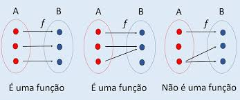
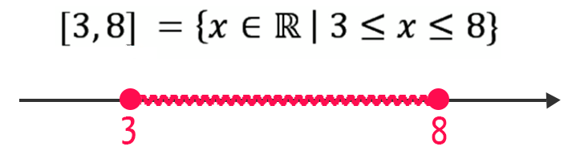
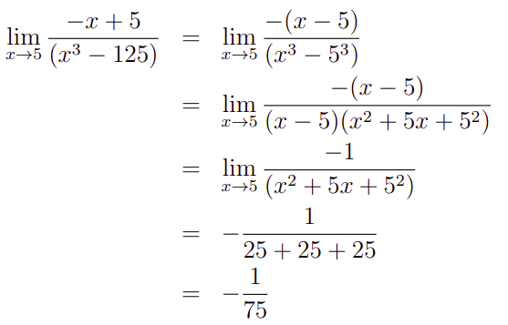
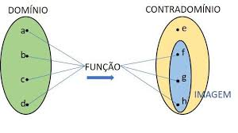
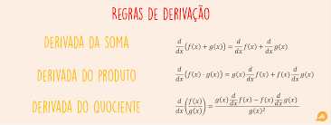

WebQuest Cálculo
Bem-vindo a nossa página!
Este projeto foi desenvolvido pelos alunos Ana Cristina Ferreira da Silva e Diogo Gabardo Soares do curso de Análise e Desenvolvimento de Sistemas (ADS), como parte da disciplina de Cálculo.
Objetivo do Projeto
O objetivo principal deste projeto é aplicar os conceitos e técnicas de cálculo aprendidos durante o curso. O cálculo é uma ferramenta matemática fundamental para analisar mudanças e resolver problemas em diversas áreas, como física, engenharia, economia e ciência de dados. Nosso intuito é demonstrar, através deste projeto, como esses conceitos podem ser aplicados em situações reais para resolver problemas práticos.
O que você encontrará aqui
Introdução ao Cálculo: Explicações sobre o que é cálculo, seus principais conceitos e aplicações.
Exemplos Práticos: Casos de uso onde o cálculo é aplicado para resolver problemas cotidianos.
História do Cálculo
O Cálculo: Origens e Desenvolvimento
O cálculo é um ramo da matemática que estuda as taxas de variação e a acumulação de quantidades. Sua trajetória histórica é rica e fundamental para o avanço das ciências naturais, engenharia e tecnologia. A criação do cálculo revolucionou a matemática e a maneira como compreendemos fenômenos dinâmicos no mundo ao nosso redor.
Início e Evolução
O cálculo começou a tomar forma durante o século XVII, quando matemáticos como Isaac Newton, na Inglaterra, e Gottfried Wilhelm Leibniz, na Alemanha, desenvolveram independentemente os fundamentos do cálculo diferencial e integral. Embora houvesse trabalhos preliminares de matemáticos antigos, como Arquimedes e outros estudiosos da Antiguidade, o cálculo, como disciplina formal, emergiu a partir das necessidades científicas e práticas da época, incluindo o estudo do movimento e as leis físicas.
Desenvolvimento e Estabelecimento
Século XVIII: Matemáticos como Euler e Lagrange expandiram o cálculo, introduzindo aplicações em problemas de mecânica, astronomia e engenharia.
Século XIX: Augustin-Louis Cauchy e Karl Weierstrass formalizaram os fundamentos do cálculo, estabelecendo rigor matemático por meio da análise, incluindo conceitos de limites e continuidade.
Século XX e além: O cálculo foi integrado a novas áreas, como física quântica, teoria de controle e ciência da computação, transformando a maneira como modelamos fenômenos complexos.
Método das Funções
O estudo e a utilização de funções são elementos centrais na matemática, fundamentais para descrever e analisar relações entre variáveis. Uma função é uma regra ou correspondência que associa a cada elemento de um conjunto de entrada (domínio) exatamente um elemento de um conjunto de saída (contradomínio).
As funções são amplamente empregadas em diversas áreas da matemática e ciências, devido à sua versatilidade e poder de modelagem. Elas são usadas para representar fenômenos, como o movimento de um objeto, a propagação de ondas ou o crescimento populacional. A representação de funções pode ocorrer de diferentes maneiras, incluindo fórmulas algébricas, gráficos, tabelas e descrições verbais.
O estudo de funções envolve a análise de suas propriedades, como domínio, imagem, continuidade e comportamento em intervalos específicos. A compreensão dessas características é essencial para resolver problemas complexos e modelar sistemas reais. Uma ferramenta comum no estudo de funções é a manipulação de expressões que as representam, utilizando técnicas como substituição, composição e inversão.
O cálculo de valores de uma função para entradas específicas e a identificação de pontos críticos, como máximos e mínimos, são técnicas frequentemente aplicadas. Além disso, a análise gráfica de uma função fornece uma visualização intuitiva de seu comportamento, ajudando a entender relações importantes, como crescimento, decrescimento e assintotas.
Um aspecto relevante do estudo de funções é sua classificação em diferentes tipos, como lineares, quadráticas, exponenciais e logarítmicas. Cada tipo de função possui características únicas que definem seu comportamento e aplicações práticas. Por exemplo, funções lineares modelam relações diretas e proporcionais, enquanto funções exponenciais são úteis para descrever crescimento ou decrescimento rápidos, como em processos biológicos ou financeiros.
Em resumo, o método das funções é um pilar da matemática, essencial para compreender e modelar relações entre variáveis. Ele permite não apenas resolver problemas práticos, mas também generalizar soluções e obter insights profundos sobre sistemas complexos. O estudo de funções é, portanto, uma ferramenta poderosa para o avanço do conhecimento em diversas áreas do saber.
Exemplo:
Intervalos
O estudo de intervalos é uma abordagem fundamental na análise de conjuntos numéricos e na resolução de problemas matemáticos. Intervalos são representações de subconjuntos de números reais que indicam um intervalo contínuo entre dois valores. Eles desempenham um papel importante em várias áreas da matemática, incluindo álgebra, cálculo e análise. Um intervalo pode ser fechado, aberto ou semiaberto, dependendo de quais extremidades estão incluídas:
- Intervalo fechado: Inclui ambas as extremidades, representado como [a, b].
- Intervalo aberto: Exclui ambas as extremidades, representado como ]a, b[.
- Intervalo semiaberto: Inclui apenas uma das extremidades, como [a, b[ ou ]a, b].
O trabalho com intervalos envolve a aplicação de operações como união, interseção e diferença para combinar ou comparar conjuntos. Essas operações são essenciais para a análise de soluções em equações e desigualdades. Por exemplo, ao resolver uma desigualdade, o conjunto solução pode ser expresso como um ou mais intervalos que representam as soluções possíveis.
Um aspecto crucial do estudo de intervalos é a análise de suas propriedades em relação às funções. Ao examinar o comportamento de uma função dentro de um intervalo específico, é possível determinar características importantes, como monotonicidade, extremos locais e pontos de inflexão. Isso é especialmente útil em cálculos envolvendo derivadas e integrais, onde os intervalos definem os limites de integração ou a região de interesse.
Além disso, intervalos são usados para definir domínios de funções e identificar restrições naturais em problemas matemáticos. Por exemplo, em funções racionais, os intervalos podem excluir valores onde o denominador se torna zero, enquanto em funções logarítmicas, o intervalo é limitado a valores positivos.
Em resumo, o método básico de trabalho com intervalos é uma ferramenta poderosa para representar e analisar conjuntos de números reais. Ele permite resolver problemas de forma estruturada e eficiente, além de ser fundamental para o estudo de funções e suas propriedades. A compreensão e a manipulação de intervalos são habilidades essenciais para a matemática avançada e suas aplicações práticas.
Exemplo:
Limites
O conceito de limites é um dos fundamentos da análise matemática e serve como base para o cálculo diferencial e integral. Um limite descreve o comportamento de uma função à medida que sua variável independente se aproxima de um valor específico. Ele é usado para entender o comportamento de funções em pontos de interesse, mesmo quando essas funções não estão definidas nesses pontos.
O limite de uma função f(x) quando x se aproxima de um valor a é denotado por lim x to a f(x). Isso significa que, conforme x se aproxima de a, os valores de f(x) tendem a se aproximar de um determinado valor, chamado de limite. Existem diferentes tipos de limites:
- **Limite finito em um ponto:** O limite de f(x) conforme x to a é um número finito L.
- **Limite infinito:** Quando os valores de f(x) crescem sem limite à medida que x se aproxima de a, diz-se que o limite é infinito ou -infinito.
- **Limite lateral:** Avalia o limite de uma função considerando apenas um lado de a, como x se aproximando de -a^ pela esquerda ou de a^+ pela direita.
A existência de um limite requer que os limites laterais sejam iguais. Se lim x to a^- f(x) = lim x to a^+ f(x) = L, então lim x to a f(x) = L. Caso contrário, o limite não existe.
O cálculo de limites envolve várias técnicas, incluindo substituição direta, fatoração, racionalização e uso de identidades trigonométricas. Quando os métodos diretos não funcionam, utiliza-se o conceito de limite no infinito ou técnicas avançadas, como o teorema do confronto (também conhecido como teorema do sanduíche).
Limites desempenham um papel crucial no cálculo diferencial ao definir a derivada de uma função, que é a taxa de variação instantânea. No cálculo integral, os limites ajudam a definir a área sob uma curva como a soma de infinitos retângulos infinitamente pequenos.
Em resumo, os limites são ferramentas indispensáveis para compreender o comportamento de funções em diferentes contextos. Eles fornecem a base para o estudo de continuidade, derivadas e integrais, sendo fundamentais para aplicações práticas e teóricas em matemática, física, engenharia e outras ciências.
Exemplo:
Domínio da Função
O domínio de uma função é o conjunto de todos os valores de entrada (ou valores possíveis para a variável independente) para os quais a função está definida. Ele é um conceito fundamental na matemática e na análise de funções, pois define os limites e as condições sob as quais a função pode operar. Identificar o domínio de uma função é essencial para entender suas propriedades e comportamento. Dependendo da natureza da função, o domínio pode ser um intervalo específico, um conjunto discreto de números ou até mesmo todos os números reais. Por exemplo:
- Para uma função polinomial como f(x) = x^2 + 3x + 2, o domínio é todos os números reais.
- Para uma função racional como f(x) = frac{1}{x - 2}, o domínio exclui x = 2, pois a divisão por zero não é definida.
- Para uma função de raiz quadrada como f(x) = sqrt{x - 3}, não há raízes reais de números negativos.
Determinar o domínio de uma função pode envolver a análise de restrições matemáticas impostas pela fórmula da função, como: - Evitar divisões por zero em funções racionais. - Garantir que as expressões dentro de raízes tenham valores não negativos, quando se trata de números reais. - Garantir que logaritmos sejam definidos para valores positivos.
Além do domínio, é importante considerar o contradomínio e a imagem da função. Enquanto o domínio se refere aos valores de entrada possíveis, o contradomínio é o conjunto de valores de saída possíveis, e a imagem é o conjunto real de valores de saída alcançados pela função.
Em resumo, o domínio de uma função é um aspecto essencial para definir e analisar seu comportamento. Identificar corretamente o domínio ajuda a evitar erros e fornece uma compreensão mais profunda das condições e limites em que a função opera. O estudo do domínio é indispensável para resolver problemas matemáticos e compreender aplicações práticas de funções em diversas áreas do conhecimento.
Exemplo:
Derivada
A derivada é um conceito central no cálculo, utilizado para descrever como uma quantidade muda em relação a outra. Em termos mais simples, ela mede a taxa de variação de uma função em um determinado ponto, ou seja, quão rapidamente algo está mudando em um momento específico. Esse conceito pode ser visualizado geometricamente como a inclinação da reta tangente ao gráfico da função naquele ponto.
Para entender a derivada, imagine que você está dirigindo em uma estrada. A velocidade que você vê no velocímetro do carro é uma derivada: ela indica a taxa de variação da sua posição em relação ao tempo. Assim, a derivada é como uma ferramenta matemática que permite traduzir mudanças contínuas em valores precisos.
O cálculo de uma derivada envolve observar como pequenas mudanças em uma variável influenciam outra. Por exemplo, se você aumenta levemente a temperatura de um forno, como isso afeta o tempo de cozimento de um bolo? Esse tipo de análise é feito usando a derivada, que ajuda a entender a relação entre essas variáveis.
Embora existam muitas técnicas e regras formais para encontrar derivadas, a ideia básica permanece simples: capturar a essência de como algo está mudando. Essa ferramenta matemática tem inúmeras aplicações práticas, como prever o comportamento de sistemas físicos, otimizar processos industriais ou mesmo entender tendências em economia e estatística.
De forma geral, a derivada nos oferece um olhar detalhado sobre como as coisas mudam, permitindo não apenas prever, mas também controlar fenômenos em diversas áreas do conhecimento. É uma ferramenta poderosa para entender o mundo dinâmico ao nosso redor.
Exemplo:
Integral
A integral é uma das ideias centrais do cálculo, sendo utilizada para entender e calcular somas acumuladas em diversas situações. Ela pode ser pensada como uma maneira de medir quantidades que variam continuamente, como a área sob uma curva, o volume de um sólido ou até mesmo o deslocamento em física. A integral funciona como o oposto da derivada: enquanto a derivada analisa como uma quantidade muda em cada instante, a integral acumula essas mudanças ao longo de um intervalo.
Existem dois tipos principais de integrais: a integral indefinida e a integral definida. A integral indefinida é uma forma de encontrar uma função original a partir de sua taxa de variação, incluindo todas as possibilidades que diferem por uma constante. Já a integral definida foca em calcular um valor numérico que representa o total acumulado em um intervalo específico, como a quantidade de água que enche um tanque em certo período.
Para resolver uma integral, existem técnicas que ajudam a simplificar o trabalho, dependendo do problema. Essas técnicas incluem reescrever o problema de formas diferentes para torná-lo mais fácil de resolver ou dividir uma quantidade complexa em partes menores. Embora algumas situações exijam métodos mais avançados, a ideia central sempre gira em torno de somar pequenas partes para entender o todo.
As integrais têm aplicações práticas impressionantes em diversas áreas. Na física, ajudam a calcular energia, trabalho ou a quantidade de material que passa por uma superfície. Na engenharia, são usadas para projetar estruturas, calcular volumes ou entender o comportamento de sistemas contínuos. Na economia, ajudam a prever tendências de crescimento e a analisar como fatores acumulam ao longo do tempo. Até na biologia, as integrais podem ser úteis para modelar populações ou processos que mudam de forma contínua.
Em essência, a integral é uma ferramenta versátil e poderosa que nos permite lidar com problemas relacionados a acúmulo e variação. Ela nos ajuda a enxergar o todo a partir das partes, tornando-se indispensável em áreas que exigem precisão e compreensão detalhada de mudanças contínuas.